01 · Overview
The production code, trained models, and internal datasets from TOONTRA belong to my former employer and are not included in this portfolio.
I still have an early research version of the project that I developed while building the original pipeline. For this case study, I used that code to reconstruct and re-evaluate selected parts of the system. I no longer had access to the company’s internal webtoon datasets, so the reconstructed version uses public data instead. Most publicly available comic datasets I found were based on older black-and-white manga, so they do not fully match the color webtoons used in the original project.
The images and video shown here are selected research examples with reduced resolution and removed metadata. Customer information is not shown.
My Role
Two interns contributed during the early stage of TOONTRA. After their internships ended, I continued as the project’s only AI researcher for most of its development.
My work covered the modular architecture, dataset construction, model training and evaluation, and the preprocessing and post-processing algorithms used throughout the pipeline. Backend and frontend developers built the application and integrated the AI pipeline into the system used by the artists and translators.
Webtoon Localization
TOONTRA was designed as a tool for webtoon artists and the translation team. It handled the main steps of the localization process, from finding the original text to removing it, translating it, and placing the translated text back into the artwork. The project included:
- Speech bubble detection
- Text detection and OCR
- Machine translation
- Speech bubble segmentation
- Text inpainting
- Font matching
- Text reinsertion and layout
- Image enhancement
Mistakes in one step could affect the next. Incorrect OCR could lead to a bad translation, and even a correct translation could still look wrong if the font or layout did not fit the artwork.
Limitations of the Existing System
When I joined the company, there was already an internal localization tool. It worked, but artists still had to correct a significant amount of the output before publication.
The existing tool had four main limitations:
- Speech bubbles were detected with assumptions that worked mainly for simple white bubbles.
- Text regions could be grouped in the wrong reading order.
- Text removal relied on white ellipses, which damaged non-white bubble backgrounds.
- Different parts of the pipeline were tightly connected, making experiments and replacements harder than they needed to be.
Modular Architecture
I separated each major stage and defined clear inputs and outputs, so individual components could be changed without affecting the rest of the pipeline. The detector did not need to know how OCR worked, and OCR did not depend on the translation backend.
This made it possible to test newer detectors, replace the original text-removal method with Stable Diffusion inpainting, and later integrate EXAONE for translation.
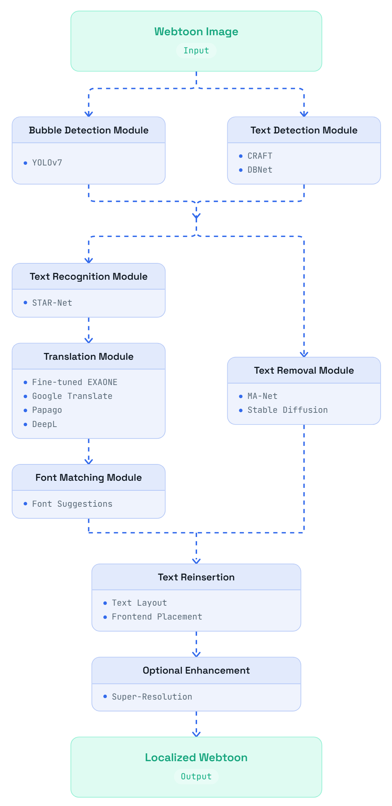
In TOONTRA v2, I kept the pipeline modular internally but simplified how it was used.
A single call to toontra.process(image_paths) accepted an array of image paths
and returned the images with the original text removed, the translated text, text information,
and bounding-box coordinates.
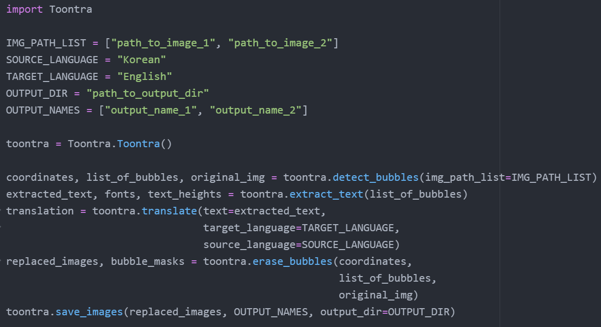
The public reconstruction is available on GitHub.
02 · Speech Bubble Detection and Text Regions
Dataset Preparation
The speech bubble dataset contained 11,422 annotated speech bubbles collected from production webtoons and older internal material. A large part of the dataset came from three webtoons I worked with during development: Miracle Doctor (기적의 물리치료사), 빌어먹을 마검들, and 나의 수컷 강아지.
Because the original production material was often available as layered PSD files, bubble coordinates could be recovered from the layer geometry for a large part of the dataset. This was much faster and more consistent than drawing every bounding box manually. In some cases, however, speech-bubble layers covered the entire image rather than tightly enclosing the bubble itself. Such samples were either excluded from the dataset or, when possible, the corresponding webtoon artists were asked to provide PSD files with tighter layer boundaries.
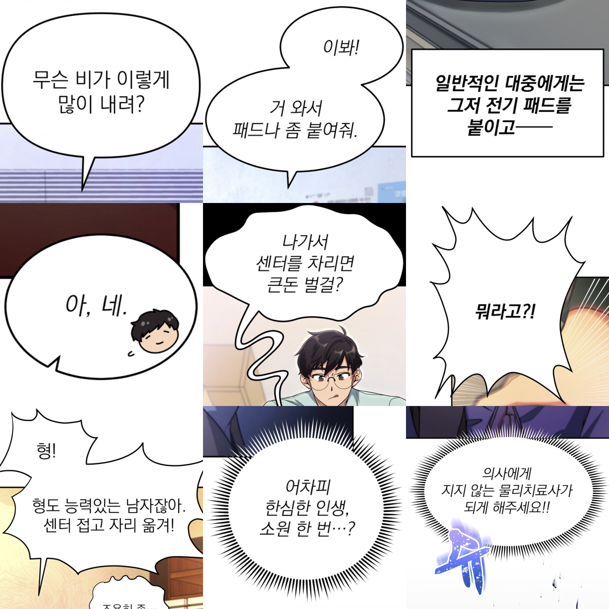
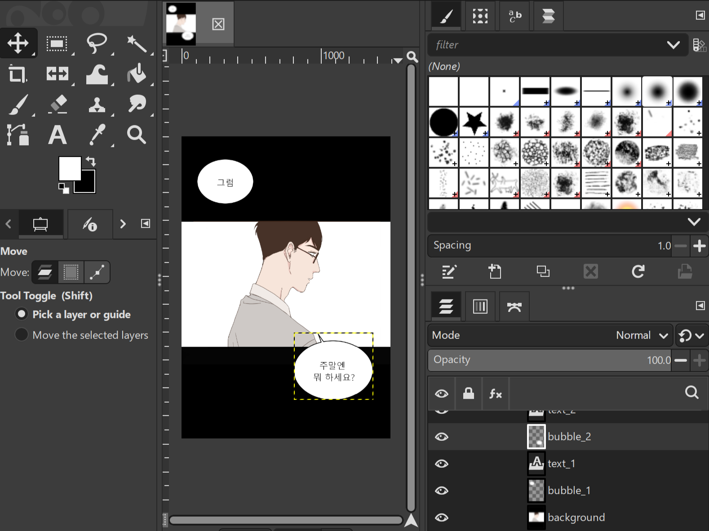
Detecting Speech Bubbles in Long Webtoon Images
For TOONTRA v1, I used YOLOv7 to detect speech bubbles. Webtoon episodes were much taller than the detector input, so I processed them as overlapping vertical tiles. The overlap helped with bubbles near tile boundaries, but it could also produce duplicate detections when the same bubble appeared in two neighboring tiles.
To reduce duplicate detections from overlapping tiles, I used a tile-ownership rule. Each tile owned the region up to the midpoint of its overlap with the neighboring tiles, and the center of each detection determined which tile should keep it. NMS was used as an additional deduplication step. In the public reconstruction, I made this more conservative by using ownership as a preference during cross-tile deduplication rather than immediately discarding detections outside their ownership region.
The diagram below uses 50% overlap to make the ownership regions easier to see. The exact overlap was not important to the ownership rule itself.
For the public reconstruction, I evaluated the long-webtoon detection pipeline on 367 manually labeled speech bubbles from three webtoons. The pipeline used overlapping tiles with a tile-ownership rule to handle detections near tile boundaries. With YOLO26, detections across overlapping tiles were more consistent, so ownership had less effect on the final result. Global NMS and ownership with same-tile NMS both reached an F1 score of 0.920.
I also repeated the evaluation with YOLOv7, which was closer to the detector used in the original project, on the same independent benchmark. Ownership gave a slight improvement across precision, recall, and F1, with F1 increasing from 0.907 to 0.910. This was consistent with what I had observed in production, where the ownership rule reduced occasional duplicate detections and errors near tile boundaries. In one benchmark example, global NMS kept the slightly higher-confidence detection from the neighboring tile, but its IoU was 0.496, just below the 0.50 matching threshold. Ownership kept the detection from the correct tile instead, increasing IoU to 0.511 and recovering the bubble.
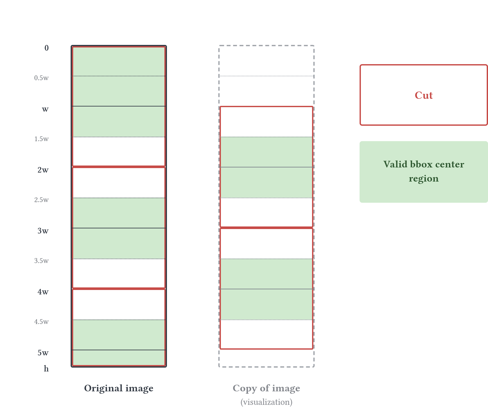
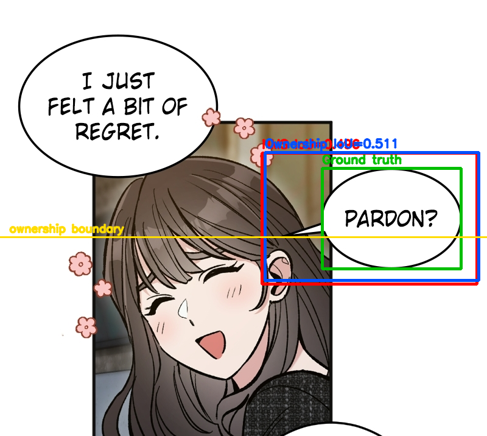
The detected bounding box defined the region of interest (ROI) for segmentation. I expanded it slightly to avoid cutting off irregular outlines or long speech-bubble tails. In the original implementation, the box was expanded by 5% on each side. The extra area was acceptable because the segmentation model determined the actual bubble shape within the ROI.
The evaluation also included a more difficult webtoon with decorative narration boxes, irregular shapes, transparent elements, and low-contrast regions.
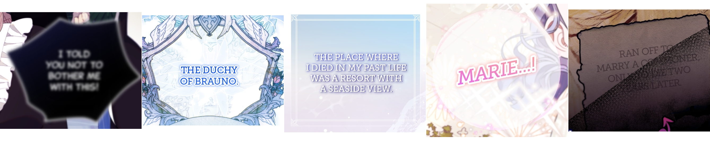
Text Outside Speech Bubbles
Not all text in a webtoon appears inside speech bubbles. Narration, signs, text shown on screens, and sound effects can appear directly on the artwork, so I used a separate scene-text detection stage for text both inside and outside speech bubbles.
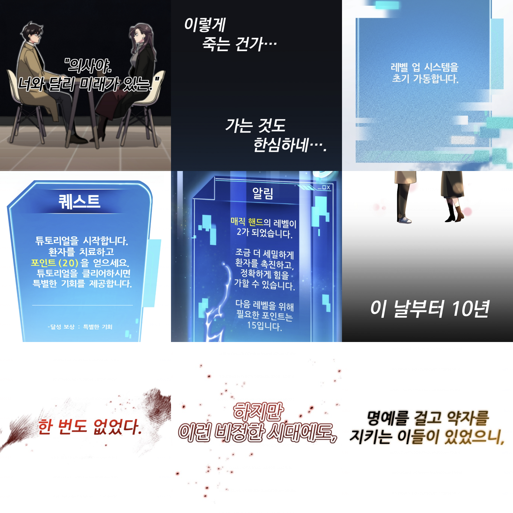
Onomatopoeia Replacement
Onomatopoeic text required a different approach from regular dialogue. I initially tried to generate English replacements in a similar visual style. Some looked reasonable on their own, but once inserted into a panel, they often did not match the surrounding artwork. Some outputs also contained distorted or difficult-to-read lettering.
While working with the production team, I noticed that artists often reused existing templates for common sound effects instead of drawing each one from scratch. I decided to use the same idea in TOONTRA.
I changed to a sticker-based approach. The system detected and recognized the original text, mapped it to a predefined sound-effect label, and removed it from the image. It then suggested a corresponding translated sticker and placed it inside the detected bounding box. The artist could resize or reposition the sticker, select a different one, or leave the area empty. In the cases I tested, the sticker library produced more consistent results than generated replacements while leaving the final choice to the artist.
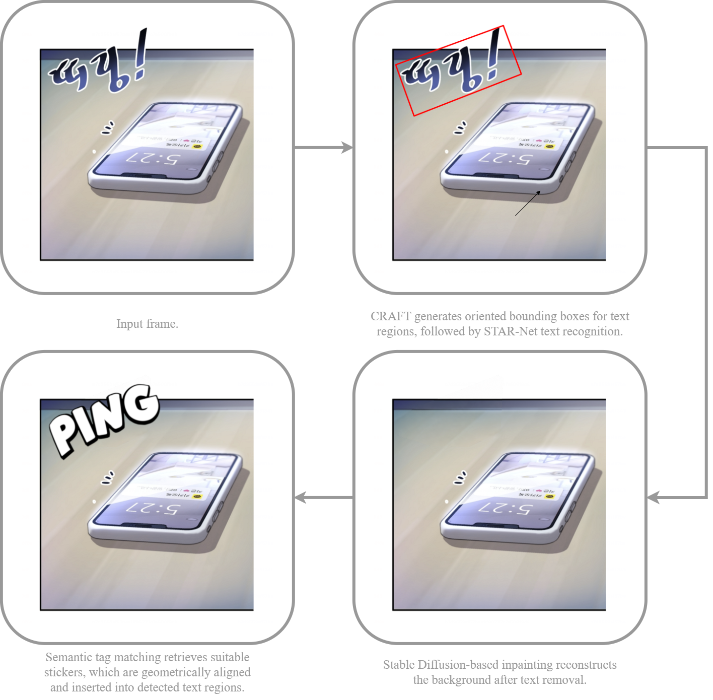
03 · Text Removal and Inpainting
TOONTRA v1 used the predicted speech-bubble segmentation mask to fill the bubble interior with white. The mask followed the bubble shape more precisely than a simple ellipse, and this worked well for bubbles with plain white interiors.
The method was less reliable for bubbles containing gradients, textures, transparency, or artwork behind the text. Even when the segmentation mask was accurate, filling the bubble with white removed these details.
For TOONTRA v2, I replaced the white fill with inpainting. Instead of assuming that the bubble interior was white, the inpainting model reconstructed the removed region using the surrounding image as context.
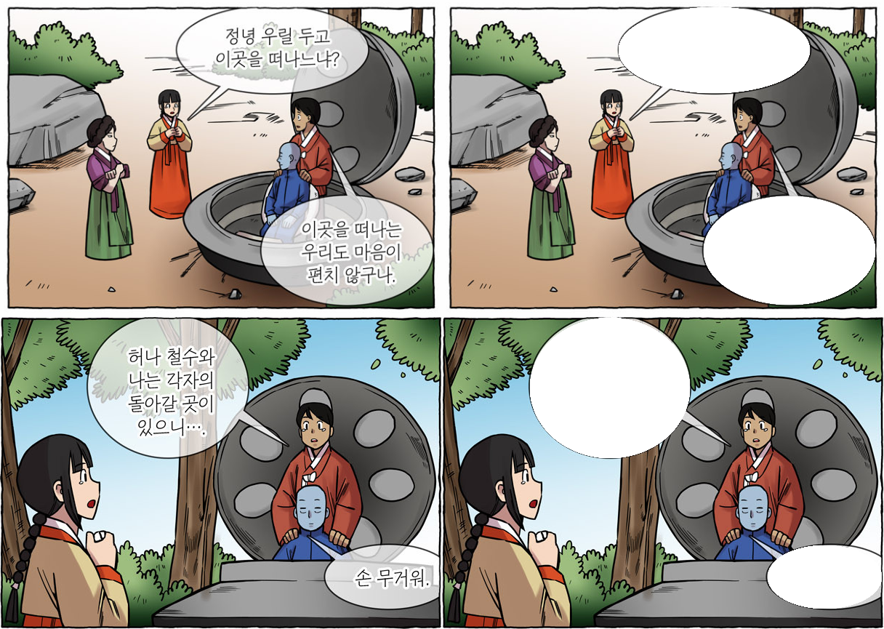
Segmentation and Inpainting
The detector provided a bounding box around each bubble, and the segmentation model determined its actual shape. I compared U-Net, DeepLabV3+, SegFormer, and MA-Net on the same dataset. MA-Net performed best on my data, so I used it in the final pipeline. This also meant the detector box did not have to be perfectly tight, as long as the complete bubble was included in the crop.
Stable Diffusion reconstructed the detected text region using the surrounding image as context. During post-processing, I used the predicted bubble mask to restrict the result to the bubble interior, clean up pixels along the boundary, and keep the rest of the image unchanged.
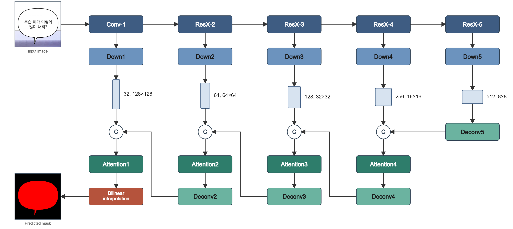
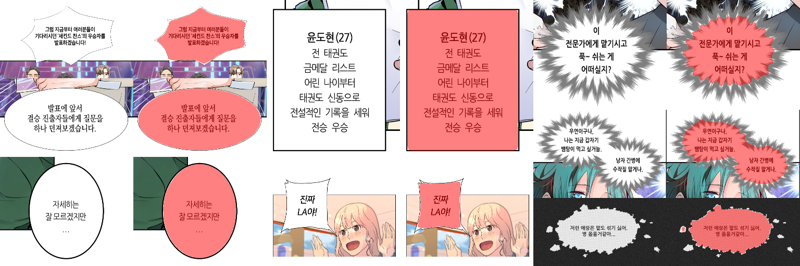
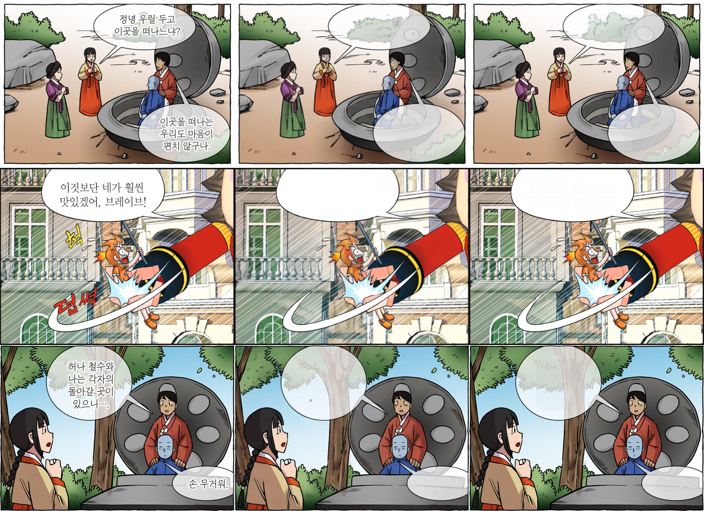
Processing time was important because a production batch could contain thousands of speech bubbles, with each bubble requiring a separate inpainting pass. More denoising steps sometimes improved the reconstructed background, but the additional processing time accumulated across the batch.
In my tests, around 10 denoising steps followed by lightweight post-processing produced acceptable results for the final localized image. Increasing the process to 50 steps improved some background details, but it took longer and still did not eliminate the need for cleanup. Because the translated text later covered much of the inpainted region, I used approximately 10 steps in the final pipeline.
04 · Text Detection and Recognition
OCR was less reliable on webtoons than on clean document images. Fonts, text size, orientation, image quality, and backgrounds could change from one panel to another. Some fonts were also highly stylized or distorted, making individual characters difficult to recognize even when the image quality was good.
I initially used CRAFT for text detection and later tested DBNet as an alternative. For text recognition, I used the Spatial Attention Residue Network (STAR-Net).
A recurring recognition error was confusion between visually similar Hangul consonants, particularly ㅈ / ㅊ and ㅇ / ㅎ. A single incorrect consonant could change the meaning of a word and affect the translation.
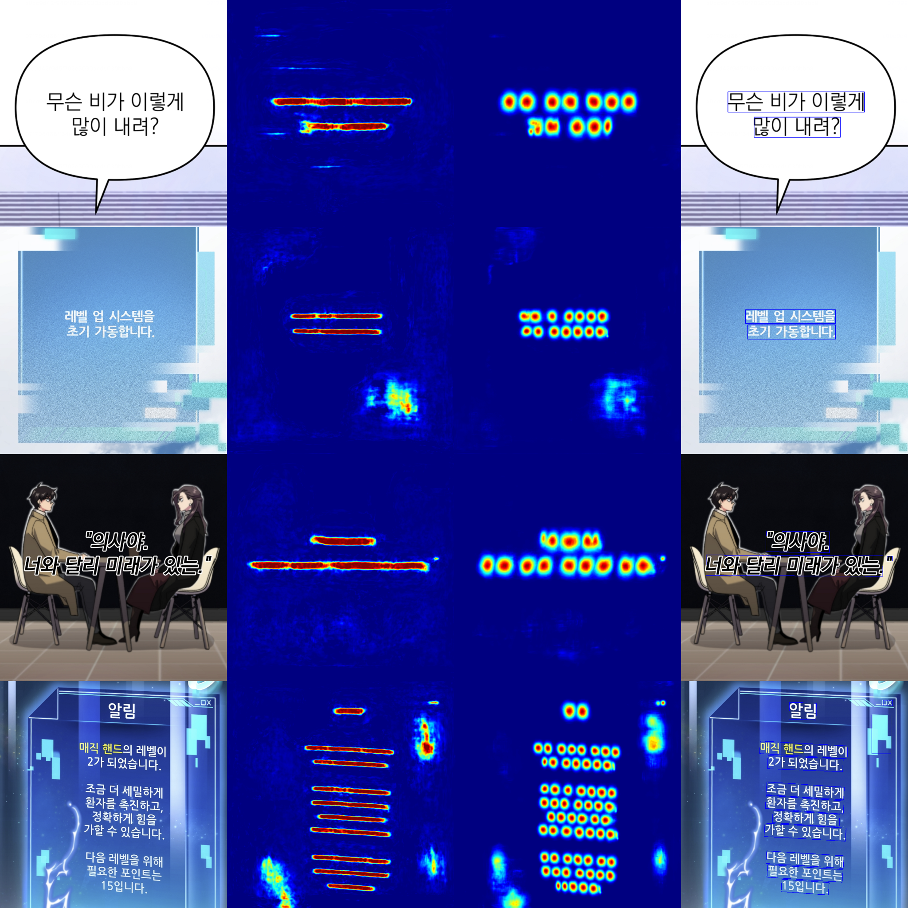
Text Recognition Dataset
Part of the recognition dataset came from the original PSD files. I created a Python tool that read the text and its position from each layer, cropped the corresponding region from the panel, and saved the image together with its label.
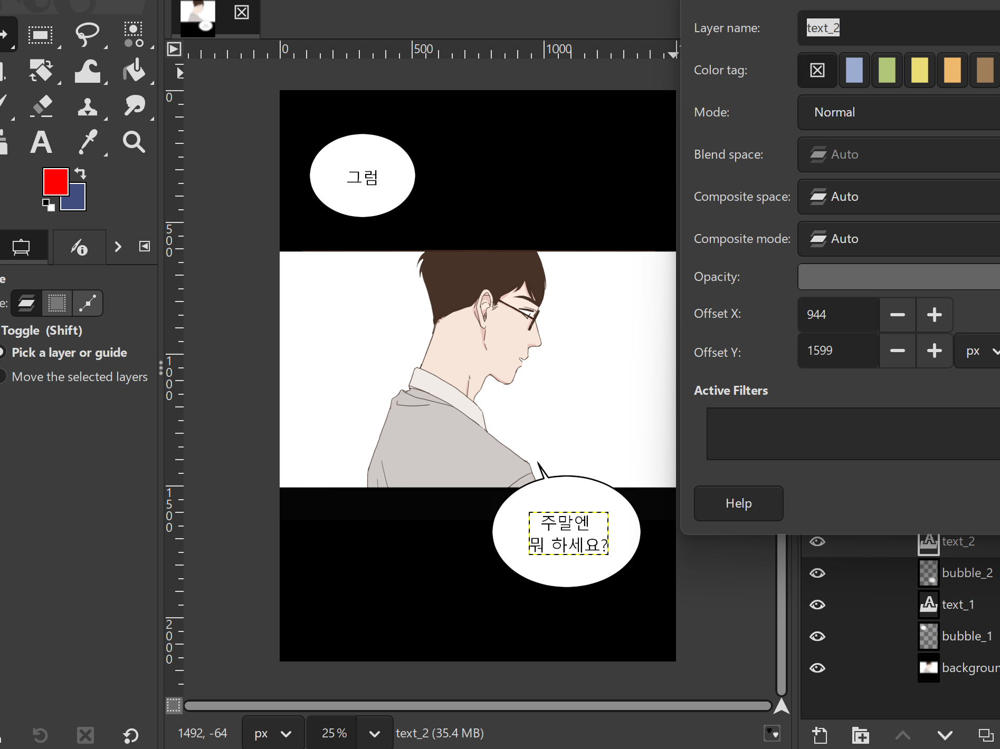
The extracted image-and-text pairs still needed preprocessing, filtering, and validation, but this required much less manual work than cropping and transcribing each sample individually.
Korean Text Dataset
The first synthetic dataset covered all 11,172 modern Hangul syllables. Although this provided complete character coverage, it gave common and extremely rare syllables the same weight. In real Korean text, syllables such as 꺩, 꺪, 꺫, 꺬, 꺭, ... are almost never used.
For the second version, I collected 2,350 Korean sentences from several sources and used them to generate the training samples. This made common syllables appear more frequently and brought the dataset closer to the distribution of real Korean text.
I also kept synthetic samples covering the full Hangul set, so rare syllables and those missing from the collected sentences were still represented in the training data.
Synthetic and Real Data
I built a synthetic text generator using 78 Korean fonts, with variations in font style, color, orientation, distortion, background, and noise. This allowed me to generate labeled training samples without manual annotation.
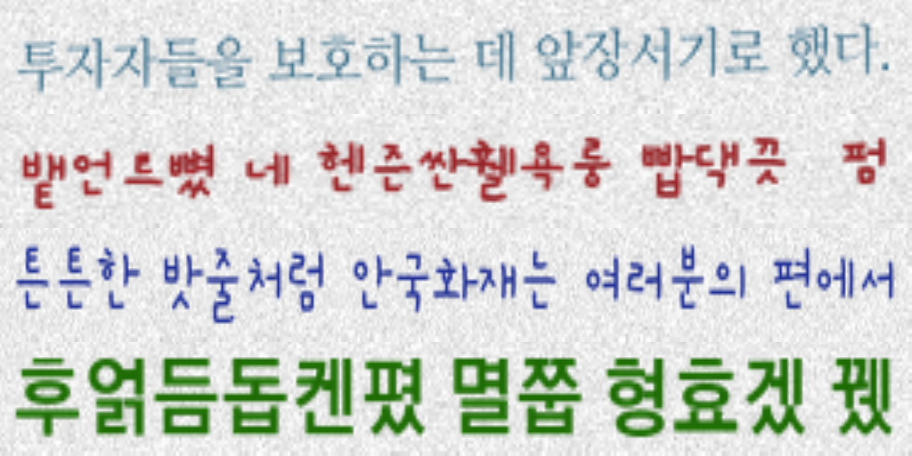
However, models trained only on synthetic data performed worse on actual webtoon images. I therefore added the samples extracted from PSD files to the training set. These samples helped the model adapt to the fonts, backgrounds, and image quality found in real webtoons.
05 · Font Matching and Text Reinsertion
Font Matching
Font choice affected how well the inserted text matched the original artwork. When the replacement font was very different from the original, the text looked out of place even when the translation was correct.
I initially treated this as an exact font-classification problem and trained a model to identify the original Korean font. The results were not reliable enough for production. Many fonts shared similar character shapes, and the differences between them often disappeared after compression, resizing, and anti-aliasing.
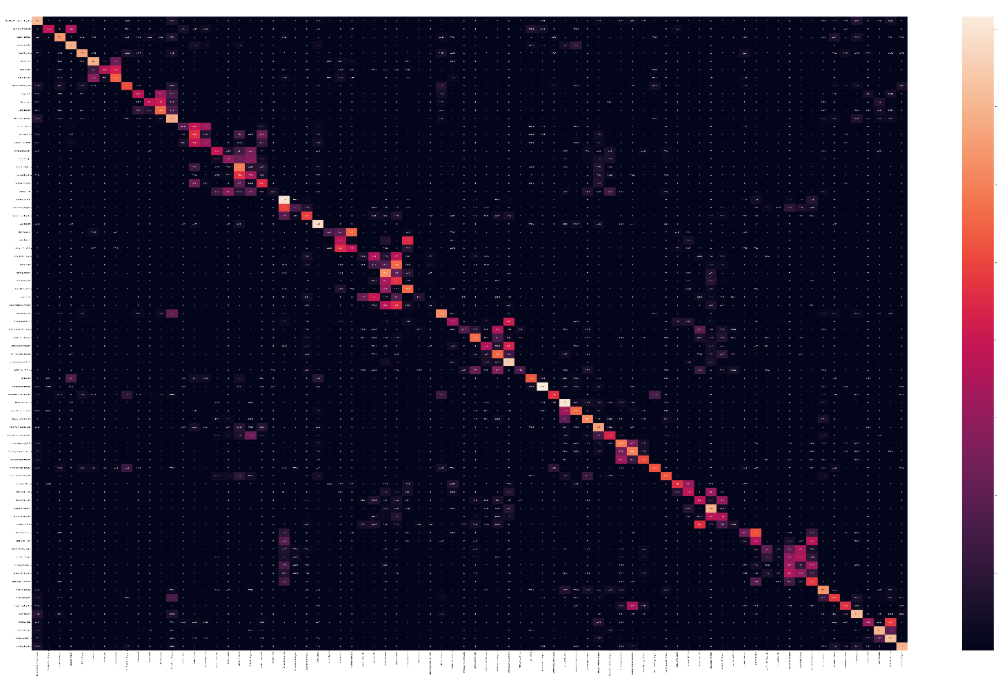
I therefore changed the task from identifying the exact font to classifying it into one of three general styles:
- Typing fonts: commonly used printed fonts.
- Handwritten fonts: fonts designed to resemble handwriting.
- Decorative fonts: more stylized fonts with distinctive shapes.
I retrained the classifier using these broader labels. Based on the predicted style, TOONTRA showed the artist several suitable fonts from the same group. The artist then selected the final font directly in the editor.
Text Reinsertion and Layout
The translated text also had to fit inside the available speech-bubble region. My first implementation handled this in Python. Given the text and target region, the algorithm tested different line breaks without splitting words, then adjusted the font size until the calculated layout fit.
The method worked well for most text regions, but it required testing many combinations of line breaks and font sizes. This became slow when processing a complete webtoon episode.
The frontend already had text-fitting logic for its speech-bubble components, so I moved the final layout step there. TOONTRA passed the translated text, selected font, and target region to the frontend, which determined the line breaks and font size. This removed the need to maintain separate layout implementations and made the calculated result consistent with what the artist saw in the editor.
06 · Translation
The first version of TOONTRA used Google Translate and Papago. For TOONTRA v2, I integrated EXAONE, which allowed us to adapt the translation model using the company’s internal localization data instead of relying entirely on external translation APIs.
Webtoon dialogue often depends on the surrounding conversation. Individual lines may be incomplete, and short expressions can change meaning depending on the speaker and situation. Instead of sending each speech bubble separately, I grouped consecutive dialogue lines from the same scene and translated them together.
Fine-Tuning EXAONE for Webtoon Translation
The fine-tuning data came from webtoons previously localized by the company’s professional translators. I aligned the original dialogue with the final translated text, so the training data reflected translations that had already been reviewed and used in production.
I used LoRA for fine-tuning instead of full fine-tuning. It required much less GPU memory while still allowing the model to adapt to the translation style in the training data.
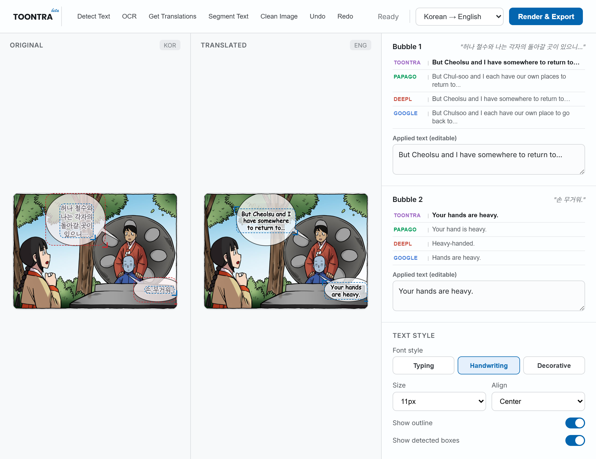
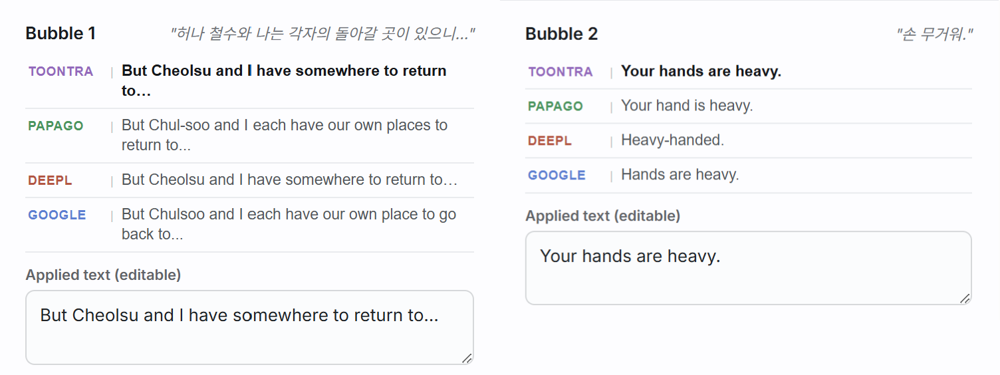
Translation Context Design
A source sentence alone does not always contain enough information to choose the correct translation. Korean often omits the subject, leaving it to be inferred from the surrounding dialogue or scene.
Source: 문을 열었다. 거기 서 있었다. Google: “I opened the door. They were standing there.” Papago: “The door opened. I was standing there.” DeepL: “The door opened. He was standing there.” Fine-tuned EXAONE: “The door opened. Someone was standing there.”
These are actual outputs recorded during development. The subject of 거기 서 있었다 is not stated, so depending on the scene, I, he, she, they, or someone could be appropriate. In this example, the fine-tuned model used the more neutral someone, but it still could not identify who was standing there from the text alone.
I included this example because it showed a problem shared by all of the systems. EXAONE was not consistently better than the other services, but when the dialogue did not give enough context, all of them had to guess.
For the next version of the dataset, I planned to include additional context such as the speaker, listener, emotion, scene, dialogue type, and relationships between characters.
07 · Image Enhancement
Image enhancement was included as an optional step after localization. The output from the main pipeline could be used without it, but the enhancement model could produce a sharper version when needed.
Training Dataset
I built the dataset from production webtoons created by the company. Their widths ranged from 1280 pixels to 2000 pixels.
For the first version of the dataset, I resized every webtoon to a width of 1280 pixels and divided it into 1280 × 1280 images, producing approximately 40,000 training samples. I later extracted overlapping 1024 × 1024 tiles without first reducing every webtoon to the same width. This preserved more detail from the wider source images and increased the dataset to approximately 80,000 tiles.
I applied augmentation to the 1024 × 1024 tiles and used them as the high-resolution targets. I then resized each tile to 256 × 256 to create the corresponding low-resolution input. The model was trained for 4× super-resolution.
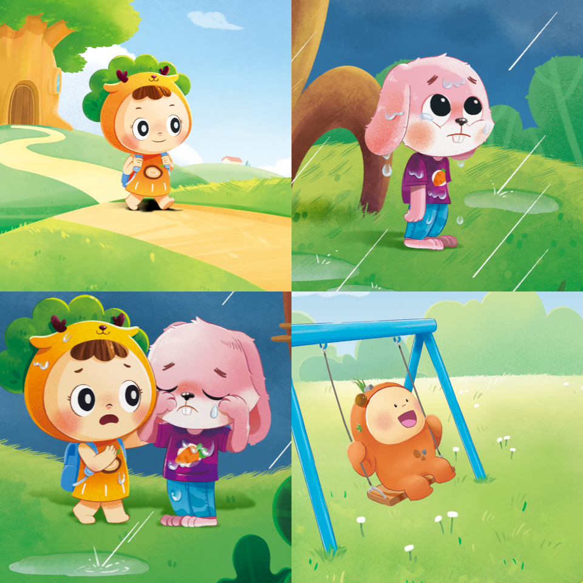
Results
The enhanced images often had sharper lines and edges, and the colors were also more saturated.
Color enhancement was not part of the training objective, and I did not evaluate it separately, so I treated the color change as a side effect rather than a measured improvement.
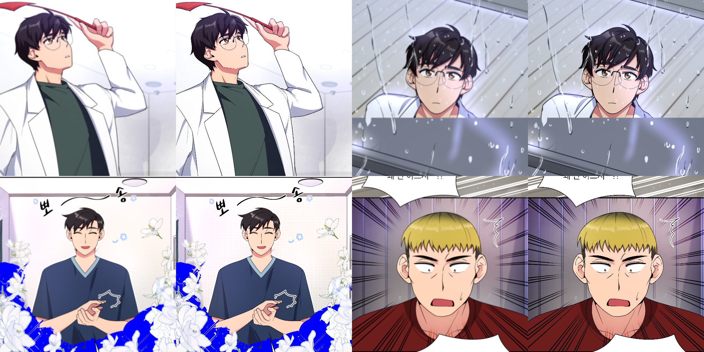
Next steps
Limitations and Future Work
The translation module used surrounding dialogue as context, but it did not receive visual information from the webtoon panels. A future version could use a multimodal model with the current panel, previous panels, and their dialogue. This could provide additional context for omitted subjects, character emotions, and expressions whose meaning depends on the scene.
I would also evaluate the complete localization workflow by reviewing full localized episodes and measuring the correction work required from translators and artists, such as the number of edits and the time spent per episode.